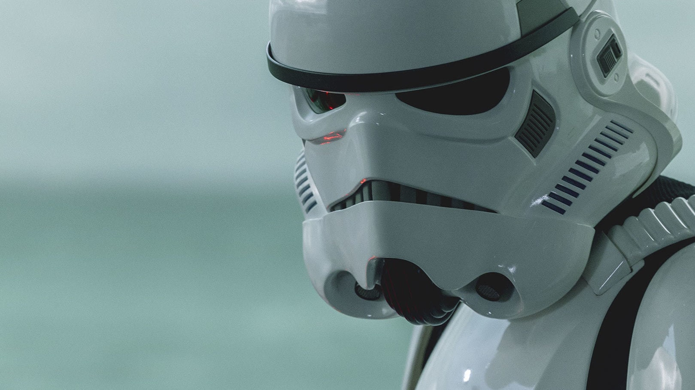

This is the story of the
-
Mandalorian
In a galaxy far, far away, Din Djarin was a skilled bounty hunter known as "the Mandalorian."
He operated during the chaotic period after the fall of the Galactic Empire, and he had a strict
code of honor as a member of the Mandalorian culture. Djarin was physically imposing, standing tall
and wearing a suit of beskar armor that marked him as a formidable warrior. He carried a variety of
weapons and was feared by many.
Despite his fearsome reputation, Mando was stoic and reserved,
preferring to let his actions speak for themselves. He was fiercely loyal to those he cared
about and would go to great lengths to protect them. Mando was also unwavering in his commitment to the Mandalorian
code, which set him apart from other bounty hunters and mercenaries in the galaxy. Despite his serious demeanor,
Mando occasionally showed a wry wit that belied his gruff exterior.
Allies

Grogu, also known as Baby Yoda, possessed great power in the Force and became a cherished figure in the galaxy.
The Mandalorian was tasked with protecting him, forming a close bond as they faced danger together.
His innocence and vulnerability served as a reminder of the importance of compassion and love amidst the turmoil
of war and conflict. He became a symbol of hope, inspiring those around him to seek redemption and forge new paths
forward.
Boba Fett was a legendary bounty hunter whose reputation preceded him throughout the galaxy. His sleek armor,
advanced weaponry, and unyielding determination made him one of the most feared and respected individuals in
the criminal underworld.
As a clone of the infamous Jango Fett, Boba inherited his father's combat skills and strategic mind, honing them
to perfection in pursuit of his quarry. He became known for his resourcefulness, using every tool at his disposal
to track down and capture his targets.

Cara Dune was a skilled warrior and former rebel shock trooper whose exploits in battle earned her a reputation as
one of the toughest fighters in the galaxy. Her combat training and experience proved invaluable as she fought against
the remnants of the Empire alongside the Mandalorian and other allies.
But Cara's strength and toughness belied a softer side. She had a deep sense of loyalty and a fierce protectiveness towards
those she cared about, often putting herself in harm's way to defend them.

Greef Karga was a charismatic leader and skilled operator of the bounty hunters' guild. His savvy negotiation skills and
ability to maintain order within his organization made him a respected figure in the criminal underworld.
Despite his affiliation with unsavory characters, Greef possessed a strong moral compass and a desire to do what was right.
He recognized the threat posed by the Empire and worked with the Mandalorian and other allies to fight against their oppressive
rule.
Enemies

Moff Gideon was a formidable presence in the galaxy, feared and respected by those who crossed his path. He was known for his
calculated tactics and ruthless demeanor, always staying one step ahead of his enemies.
As a former Imperial officer, Gideon possessed a wealth of knowledge and resources, using them to further his own interests
and expand his power. He commanded a legion of highly trained soldiers and specialized weaponry, making him a formidable
opponent in battle.

The Client was a mysterious figure who operated in the shadows of the galaxy, using his vast resources to achieve his goals.
He was known for his impeccable sense of style and his calm, collected demeanor, which often belied his true intentions.
As a high-ranking member of an unknown organization, The Client wielded significant power and influence, allowing him to manipulate
events to his advantage. He employed a group of highly skilled mercenaries to do his bidding, often using them as pawns in his
larger schemes.
Fennec Shand was a highly skilled assassin and mercenary whose reputation for deadly accuracy made her one of the most feared
individuals in the galaxy. Her sleek armor and sharpshooting abilities made her a force to be reckoned with, and her unyielding
determination to complete any mission made her a valuable asset to any employer.
Trained in hand-to-hand combat and an expert in the use of a variety of weapons, Fennec was known for her ability to quickly adapt
to any situation and take down even the toughest opponents.

Stormtroopers are the elite soldiers of the Galactic Empire, renowned for their unwavering loyalty and fearsome combat prowess.
Trained from birth to follow orders without question, they are the backbone of the Imperial military, serving in a variety of
roles across the galaxy.
Their iconic white armor provides protection from both physical and energy-based attacks, and is equipped with a range of advanced
technologies including communications gear, environmental controls, and targeting systems. Stormtroopers are also trained in a
variety of weapons, including blasters, rifles, and heavy weapons like the E-Web blaster.